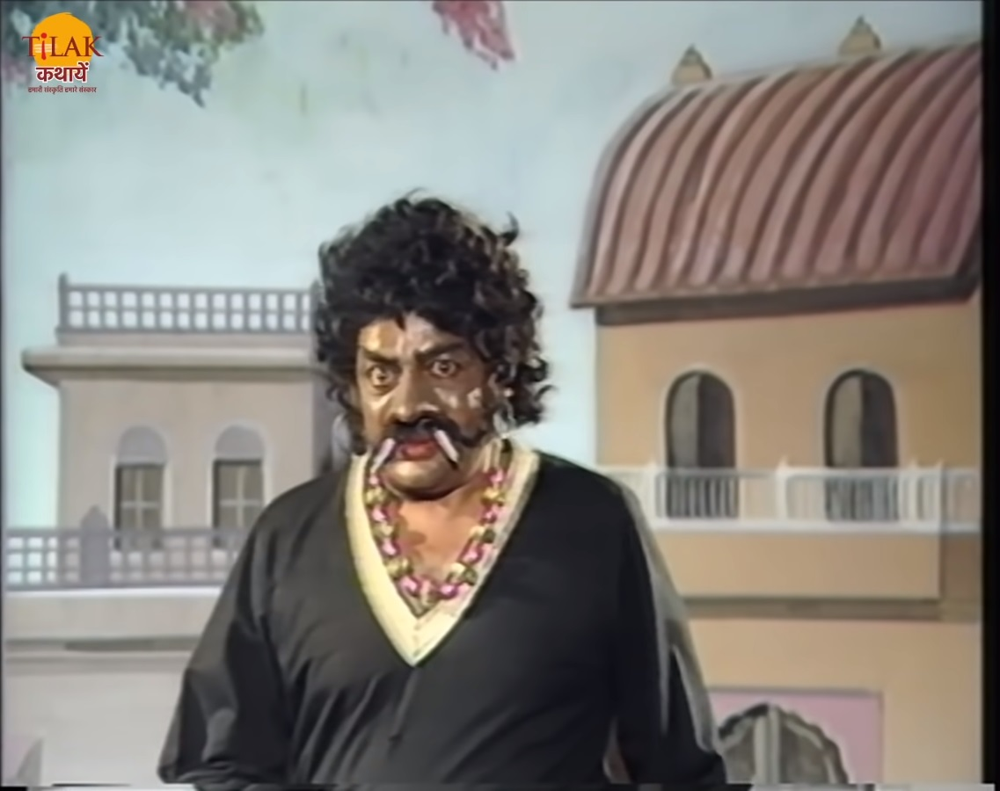

|  | बेताल को पकड़ने विक्रम फिर से जाता है दोनों में फिर से लड़ाई होती है और विक्रम बेताल को पकड़ लेता है। बेताल राजा विक्रम को कहता है की तु उस धूर्त साधु की बातों में आकर मुझे क्यों पकड़ रहा है। बेताल राजा विक्रम को उसी के राज्य उज्जैन की कहानी सुनता है जब वहाँ पर राक्षसों का कोहराम था। एक बार राजदरबारी हरिस्वामी की एक सुंदर बेटी थी जिसका नाम सोमप्रभा था। सोम्प्र्भा बहुत साई कलाओं में निपुण थी। एक राक्षस का सोमप्रभा पर दिल आ जाता है। एक दिन जब सोमप्रभा नृत्य कर रही थी रटो उसके पिता ने उससकी शादी की बात उस से की के उसे कैसा लड़का चाहिए। सोमप्रभा अपने योग्य वर के बारे में बताती है तो वह राक्षस सोमप्रभा को अपने लिए ले जाने की धमकी देकर वहाँ से चला जाता है। सोमप्रभा का भई उस राक्षस के पीछे भागता है लेकिन वह राक्षस उसके हाथ से निकल जाता है। एक दिन हरिस्वामी को रज्ज के काम से पड़ोस के राज्य में जाना पड़ जाता है। हरिस्वामी को रस्ते में डाकू घेर लेते हैं और उन की मदद को वीर सिंह नाम का लड़का उनकी मदद करता है और उन्हें डाकू से बचा लेता है। हरीस्वामी सोमप्रभा की वीर सिंह से शादी करने का प्रस्ताव रखता है।तभी उज्जैन नगर का एक कवि सोमप्रभा के घर आता है और बताता है की मैंने उन्हें मंदिर में देखा था तो मैं उनपर कविता लिखे बिना रह नहीं पाया। मैं वही कविता सोमप्रभा को सुनने आया हूँ। यह सुनकर हरीस्वामी की पत्नी खुश हो जाती है और अपनी बेटी से उसकी शादी का प्रस्ताव रखती है। |
|
|
सोमप्रभा के भाई को एक शिल्पी मिलता है वह उसके साथ शिल्पी के बनाए विमान में बैठ कर घूमता है। सोमप्रभा के भाई को वह शिल्पी पसंद आ जाता है तो वह भी अपनी बहन का रिश्ता उसके साथ पक्का कर देता है और वह शिल्पी भी शादी के लिए मान जाता है। तीनो एक साथ अपने खोजे हुए लड़कों के बारे में बताते हैं तो वो सोच में पड़ जाते हैं की अब सोमप्रभा का विवाह कैसे होगा। तीनों अपने दिए वचन को तोड़ना नहीं चाहते थे। यह निर्णय नहीं आया अक्षयतीर्थ की तिथि आ जाती है और तीनों लड़के सोमप्रभा से विवाह करने के लिए आ जाती हैं। तभी वहाँ राक्षस आता है और्र सोमप्रभा को उठा ले जाता है। तीनों लड़के सोमप्रभा को बचाने के लिए एक साथ जाते हैं।कवि उन्हें राक्षस के स्थान के बारे में बताता है। शिल्पी के विमान में बैठ कर कवि और वीर सिंह राक्षस को खोज लेते हैं। वीर सिंह उस राक्षस को मार देता है। तीनों सोमप्रभा को लेकर वापस आ जाते हैं। लेकिन प्रश्न अब भी वही था की सोमप्रभा का विवाह किस से होगा। हरीस्वामी तीनों यवकों से कहता है की यह निर्णय हम सोमप्रभा पर चोद देते हैं की वह किस से शादी करना चाहती है। बेताल विक्रम से पूछता है की अब ये बता की सोमप्रभा ने किस को अपना पति चुना है। |
विक्रम बेताल को बताता है की सोमप्रभा ने वीर सिंह को अपना पति चुना क्योंकि उसने ही उसकी रक्षा राक्षस से की। कवि सोमप्रभा की सुंदरता की प्रशंसा के करता है और शिल्पी के पास बुद्धि और कला है लेकिन असली वीर वही है जो अपनी पत्नी की रक्षा कर सके इसलिए वीर सिंह को ही सोमप्रभा ने चुना होगा। बेताल विक्रम का उत्तर सुन कर उसे कहता है की तूने उत्तर तो सही दिया है लेकिन तु मेरी शर्त फिर से भूल गया की अगर तु बोलेगा तो मैं वापस उड़ जाऊँगा और यह कह कर बेताल फिर से उसी पेड़ पर जाकर लटक जाता है।
| Previous Story | Home | Next Story |